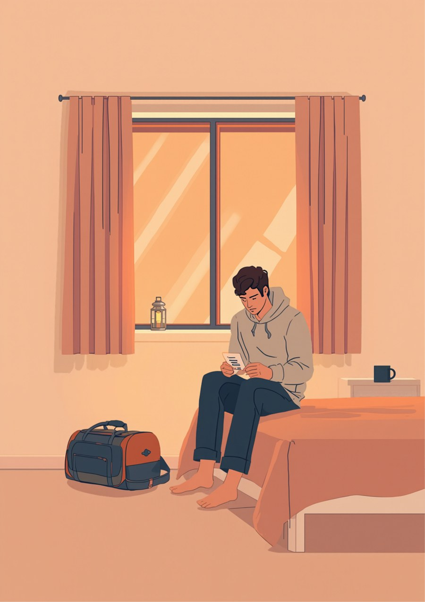
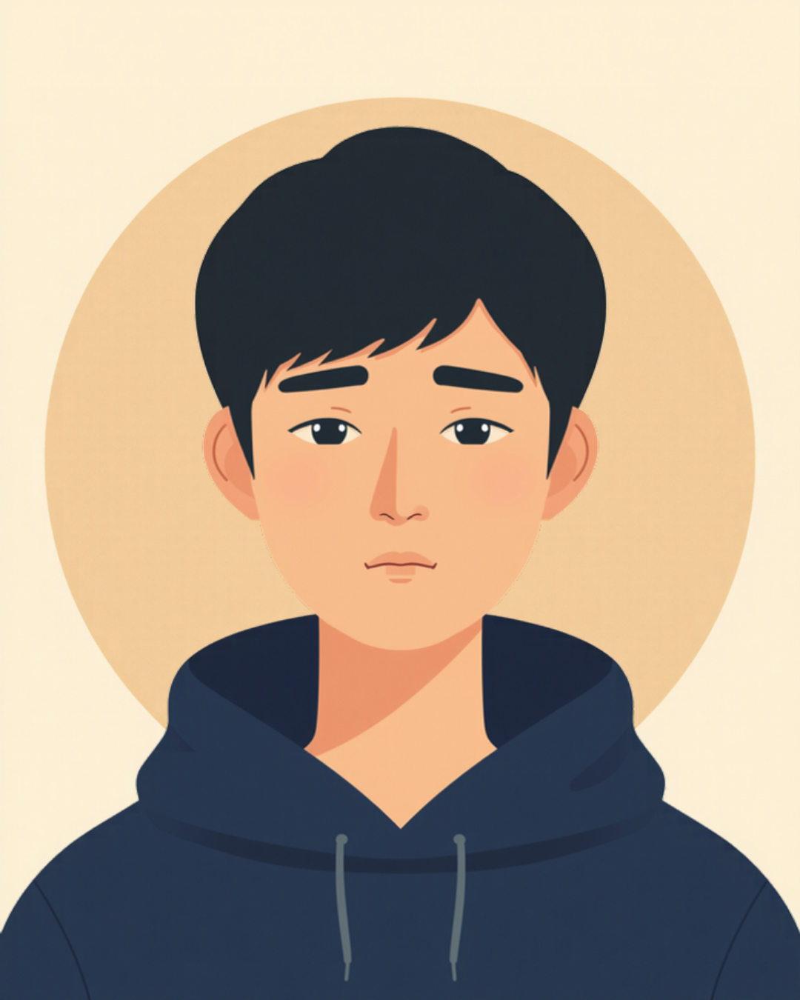
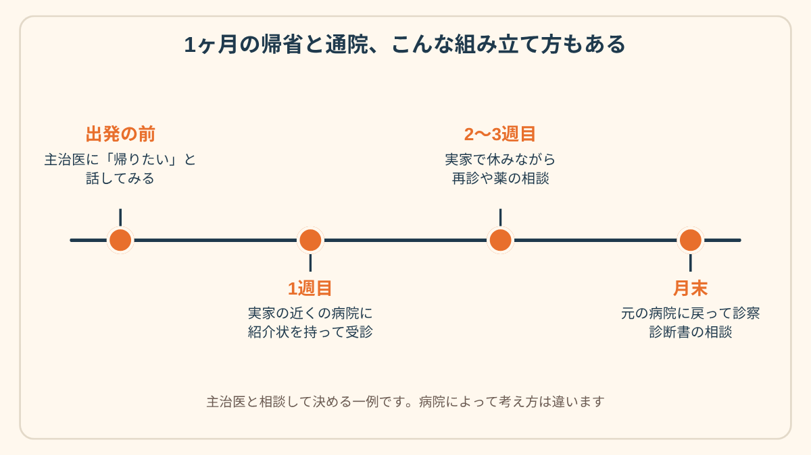
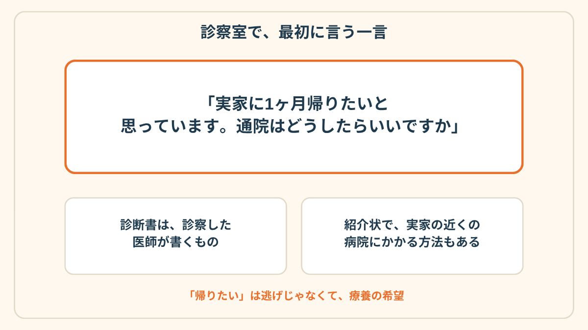

診察室のドアの前で、この一言を頭の中で3回練習しました。
それなのに、名前を呼ばれて椅子に座ったら、口から出たのは「あまり変わらないです」でした。
休職して3ヶ月。2週間に1回の診察で、私はその日、この一言を言えずに帰ってきました。

診察室のドアの前で、3回練習した
一人暮らしのワンルームで、休職に入って3ヶ月が過ぎてました。
朝はカーテンを開けない日のほうが多くて、気づくと夕方。
その日いちばん声を出したのが、コンビニの「袋いりません」だった、なんてこともありました。
実家は、新幹線で2時間半くらいの地方の町です。
帰りたい、って思ったのは、たぶん9月に入ってすぐの、ある夜でした。
洗濯物を取り込むのも面倒で、暗い部屋でぼーっとしてたら、急に、母が作る味噌汁の匂いが思い出されたんです。
それで、1ヶ月くらい帰ろうかな、と。
そう決めたところまでは、よかった。
問題は、通っているクリニックでした。
最初の診察のときに言われたのが、「休職延長の診断書は、2週間に1回は診察に来てもらわないと出せません」という一言。
そのときは、ふーん、くらいにしか思ってなかった。
実家に帰ったら、この「2週間に1回」が、そのまま壁になるって、気づいたのはだいぶあとです。
言えなかったのは、「元気になった」と思われそうだったから
1回目の診察。前の晩にメモに書いた「実家に帰りたい」を、ポケットの中で何度もなぞってました。
先生が「最近どうですか」って聞いて、私は「あまり変わらないです」。
はい、また2週間後に、で終わり。
2回目も、同じ。
メモは1回目より、しわしわになってました。
なんで言えなかったのか、あとから考えると、理由はけっこうしょうもなくて。
「帰りたい」って言ったら、「動けるくらい元気になったんだね」と思われる気がしたんです。
そのまま「じゃあ、そろそろ復職の話をしましょうか」って流れになったらどうしよう、と。
「先生に『今週はどうでした？』って聞かれるたびに、正解を探しちゃうんですよ。元気って言ったら復職を急かされそうだし、しんどいって言ったら薬が増えそうだし。実家に帰りたいなんて言ったら、どっちにも取れそうで、結局『普通です』って答えて帰ってきてました。診察、5分もないのに、その前の晩は3時間くらい考えてて、バカみたいだなって。」
「本当は、休職して2ヶ月目くらいから、実家に帰りたかったんです。でも通院が月に2回あって、それを実家から通うのは無理だし、かといって主治医に『引っ越したい』みたいなことを言うのも違う気がして。結局、言い出せないまま4ヶ月目になって、そのときはもう、帰る体力もなくなってました。」
3回目の診察で、薬の説明の途中に言った
3回目の診察は、夕方の一番最後の枠でした。
待合室にはもう、私しかいなくて。
先生が、いつもの通り薬の量の話をしてくれてる途中、自分でも意味が分からないタイミングで、口が動きました。
「あの、実家に1ヶ月くらい、帰ってもいいでしょうか」
先生は、キーボードを打つ手を止めて、こっちを見ました。
私は、次に来る言葉を、身構えてました。
「まだ早いですね」とか、「それより復職の話を」とか。
そしたら先生は、「あ、いいですね」って言ったんです。
ほんとに、あっさり。

そのあとの話は、拍子抜けするくらい現実的でした。
診断書は、診察した医師が書くものだから、帰省中に診察なしでは出せない。
なので、実家の近くの病院への紹介状を書きます、と。
月末にこちらに戻ってきて、もう一度診察する、という組み立てを、その場でいっしょに考えてくれました。

実家の玄関で、何も聞かれなかった
母には、帰る前の日に電話しました。
「1ヶ月くらい、帰っていい？」って。
母は、なんで、とも、仕事は、とも聞かなくて、「布団、干しとくね」とだけ言いました。
電話を切ってから、なぜか、10分くらい動けなかった。
実家の最初の3日は、ほんとに何もしませんでした。
起きて、ご飯食べて、テレビの前で寝て、また起きて。
一人暮らしのときと同じ「何もしない」なのに、これは、誰かの家の音がしている中での「何もしない」だったんです。
通院は、紹介状を持って、実家の近くの病院に、車で15分。
待合室が、東京のクリニックよりだいぶ広くて、変なところで安心しました。
で、月末。
新幹線で戻って、元のクリニックで診察を受けて、先生に、
「どうでしたか」って聞かれて。
今度は、「ちょっと眠れるようになりました」って、ちゃんと言えました。
まあ、その次の回は、また「あまり変わらないです」って言っちゃったんですけどね。

この記事に、聞いてみたいことはありますか？
「自分の場合はどうなんだろう」と思ったことを、気軽に書いてみてください。いただいた質問は個別にお返事したうえで、匿名で記事にすることがあります。